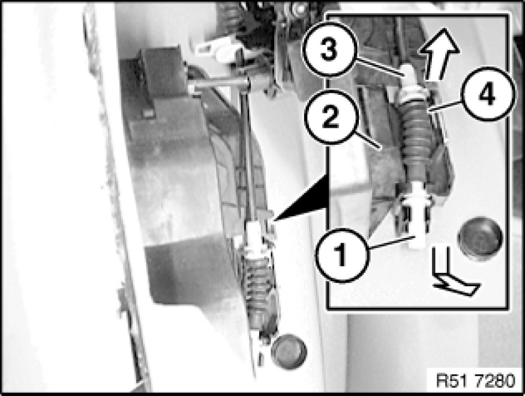
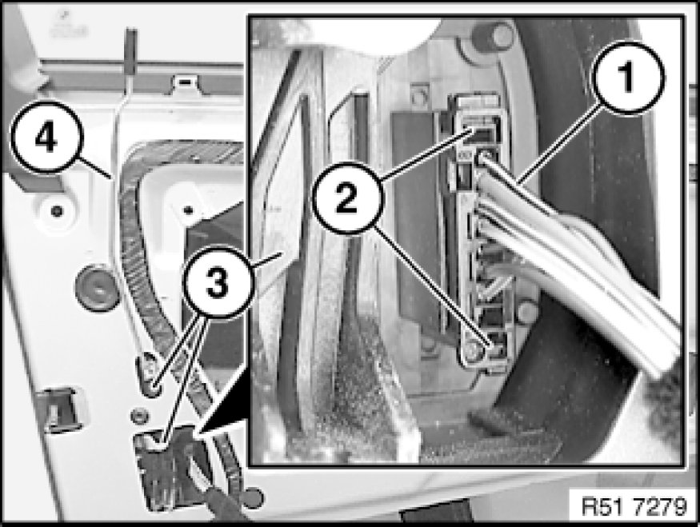
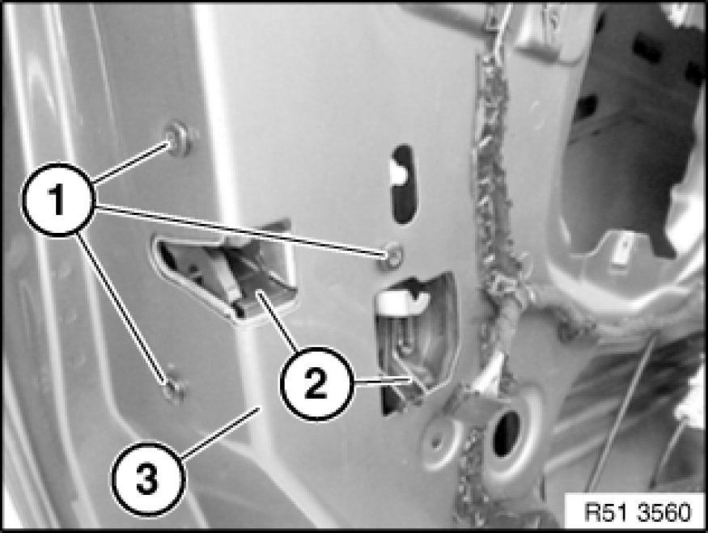
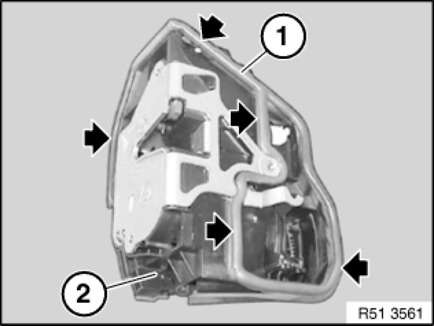
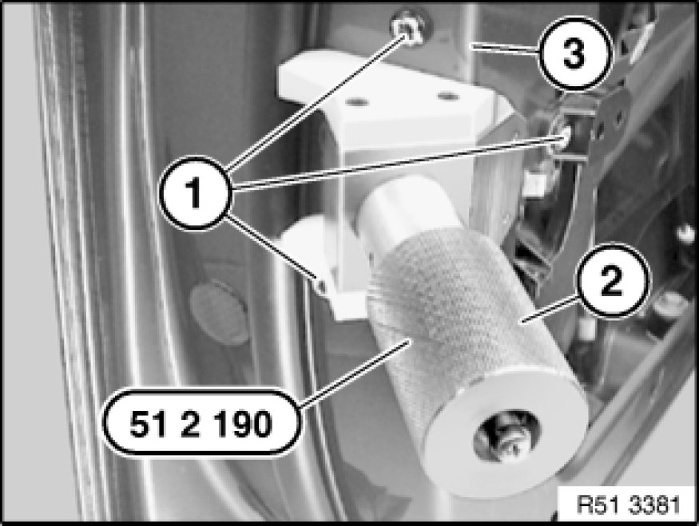
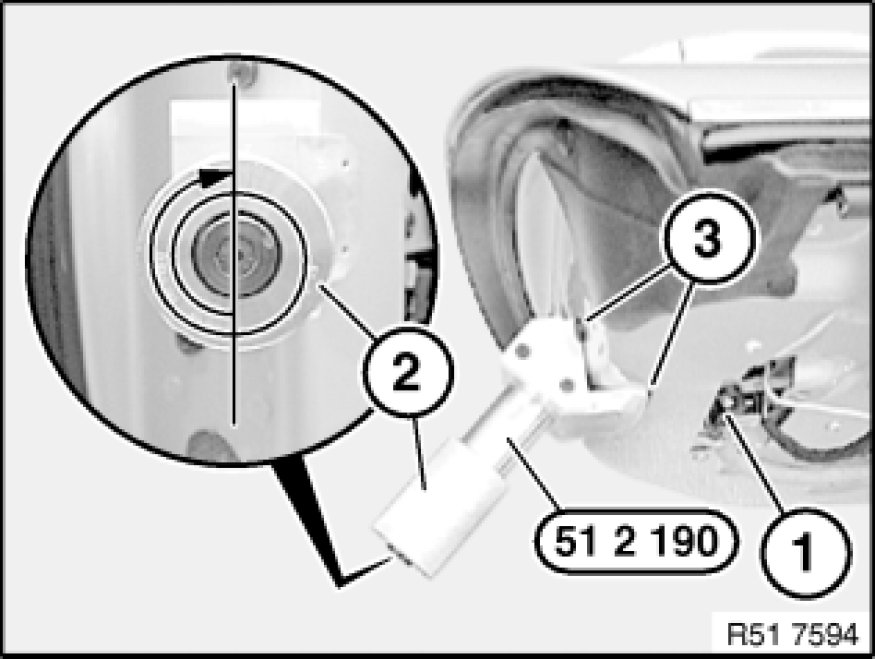
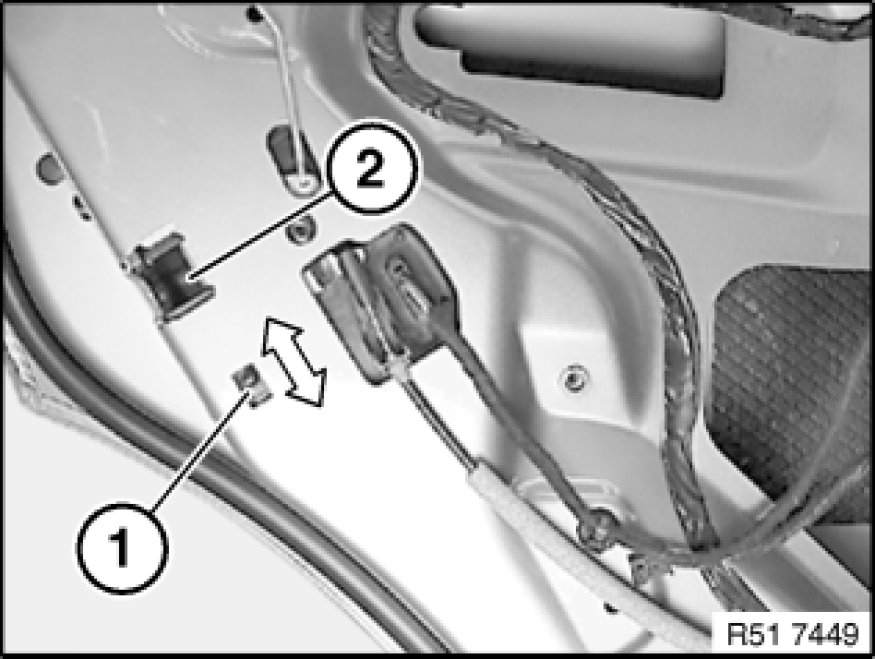

Rear Door Latch: Service and Repair
51 22 090 - Removing and installing/replacing door lock in left or right rear door

Special tools required:
- 51 2 190 51 2 190 Door Lock Tensioner

Necessary preliminary tasks:
- Remove sound insulation Removing and Installing/Replacing Sound Insulation on Left or Right Rear Door in rear area only

Disconnect Bowden cable at bottom (1) and top (3) from door lock (2).
Important!
Bowden cable must be correctly located in mounts on door lock (2).
Seal (4) must be correctly positioned on Bowden cable.
Note:
The operations for "Removing Bowden cable from door lock" end here.

Unlock plug connection (1) at lugs (2) and detach from door lock (3).
Unclip locking rod (4) from door lock (3).

Important!
Do not damage door lock seal during removal.
Release screws (1).
Remove door lock (2) from inside.
Important!
To avoid leakage and electrical malfunction:
Pull door lock (2) with special tool into corner (3), see Figs. R51 3381 and R51 7594.

Installation:
Seal (1) on door lock (2) must not be damaged.

Installation:
- Install door lock and insert screws (1), do not tighten down.
- Slide special tool 51 2 190 51 2 190 Door Lock Tensioner into opened rotary latch until latch engages in first stage.

Installation:
- Pretension door lock (1) with knurled screw (2) until special tool 51 2 190 51 2 190 Door Lock Tensioner just contacts corner points (3).
Important!
To tension door lock (1), it is only permitted to turn knurled screw (2) by a further 1 to 1.5 turns (max.) (risk of damage).
Door lock seal must rest uniformly on inner door plate (water ingress).
- Tighten down door lock screws, tightening torque 51 21 1AZ 51 21 Front Door Locks.

Installation:
Check function of child lock (1) on door lock (2).